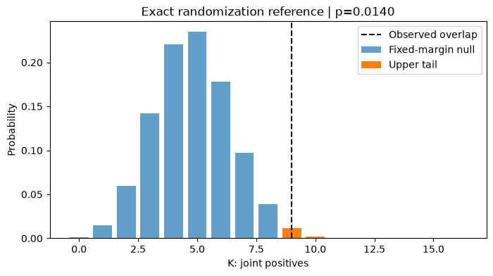
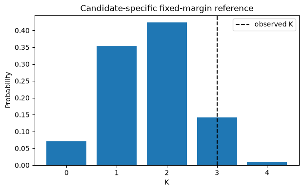

15. Chapter B. Statistical Hypothesis Testing#
15.1. Learning Objectives#
After completing this chapter, you should be able to:
Define a null hypothesis（原假设）and one-sided alternative for lift.
Derive the 2×2 table and fixed-margin hypergeometric distribution.
Explain conditional exchangeability（条件可交换性）and distinguish independence from a valid permutation law.
Compute exact and plus-one Monte Carlo p-values.
Explain outcome-independent screening and its limits.
Connection to STARM: The examples mirror the binary outcome, fixed antecedent indicators, lagged transactions, and overlapping spatial supports in the STARM manuscript. They are teaching examples, not reproductions of manuscript results.
Teaching philosophy: start with the general statistical problem, build mathematical intuition, and use STARM as one illustrative case study. The new sections precede the original computational labs.
15.2. Why Study This? — Motivation, Scope, and Real-World Problems#
A statistically interesting pattern is not necessarily evidence against chance. Hypothesis testing provides a disciplined way to ask whether the data are surprising under a specific data-generating explanation, and makes the cost of false alarms explicit. It is used in randomized clinical trials, A/B testing, environmental monitoring, policy evaluations, and scientific discovery.
Questions it answers: What exactly is being tested? What distribution would we observe if the null model held? How surprising is the observed result? How much uncertainty remains?
What it cannot answer alone: Whether the null is true, whether the effect matters practically, or whether a statistically significant association is causal.
Example beyond STARM: A treatment/control trial compares the probability of improvement, and an online experiment compares conversion rates. In both, the validity of a p-value depends on the allocation or sampling model—not just the formula.
15.3. Conceptual Roadmap#
Scientific problem → statistical representation → assumptions → mathematics → computational experiment → diagnostics → interpretation.
The chapters are standalone: STARM is a later application, not the reason these mathematical ideas exist.
15.4. Foundations and Mathematical Derivations#
15.4.1. From a scientific question to a test#
Form a statistical estimand (目标统计量), e.g. a difference in event probabilities, \(\Delta=P(Y=1\mid X=1)-P(Y=1\mid X=0)\).
Specify \(H_0\) and \(H_1\) before observing the test outcome. For a positive association \(H_0:\Delta=0\) vs \(H_1:\Delta>0\).
State a sampling/randomization model. A null hypothesis about a marginal probability is not automatically an exchangeability assumption.
Choose a statistic \(T(D)\) and calculate its reference distribution under \(H_0\).
Define \(p=P_{H_0}(T(D^*)\ge T(D_{obs}))\) for a one-sided test. A p-value is not \(P(H_0\mid D)\).
15.4.2. The fixed-margin hypergeometric derivation#
Given \(N\) units, \(n\) antecedent-positive units, and \(m\) positive outcomes, let \(K\) count joint positives. Under a uniform fixed-margin allocation there are \(\binom Nm\) equally likely outcome allocations. For exactly \(k\) positive outcomes in the antecedent group, choose \(k\) from its \(n\) units and \(m-k\) from the remaining \(N-n\) units. Thus
Then \(E[K]=nm/N\), \(\mathrm{Var}(K)=n(m/N)(1-m/N)(N-n)/(N-1)\), and \(\mathrm{Lift}=KN/(nm)\) for \(nm>0\). Hence \(E[\mathrm{Lift}]=1\). This is an exact null result under the stated allocation model, not for every observational data set.
15.4.3. Error, power and confidence intervals#
Type I error (第一类错误) is rejecting a true null; Type II error (第二类错误) is missing an alternative. Power (检验功效) is \(1-\beta\). A confidence interval is built from a coverage procedure; it is not a probability distribution over a fixed parameter. Small p-values can coexist with negligible effects in large samples.
15.4.4. Randomization versus parametric inference#
A z-test assumes a standardized statistic has an adequate reference distribution. A permutation test assumes specific allocations are exchangeable under \(H_0\). A bootstrap resamples observations to approximate an estimator’s sampling distribution; ordinary row bootstrap also fails if spatial/temporal dependence is ignored.
15.4.5. Critical thinking checkpoint#
Before running code, write down which observations are assumed independent or exchangeable and explain why. Revisit this statement after inspecting the visualizations.
15.5. Additional Derivation Visualization — General-Purpose Example#
The following self-contained experiment illustrates a general statistical principle, not STARM-specific results. Check how the plot corresponds to the formulas above.
import numpy as np
import matplotlib.pyplot as plt
from scipy.stats import hypergeom, norm
N, n, m = 80, 24, 16
k = np.arange(max(0,m-(N-n)), min(n,m)+1)
pmf = hypergeom.pmf(k,N,m,n)
observed_k = 9
pvalue = hypergeom.sf(observed_k-1,N,m,n)
fig,ax=plt.subplots(figsize=(8,4))
ax.bar(k,pmf,alpha=.7,label='Fixed-margin null')
ax.bar(k[k>=observed_k],pmf[k>=observed_k],label='Upper tail')
ax.axvline(observed_k,color='black',ls='--',label='Observed overlap')
ax.set(xlabel='K: joint positives',ylabel='Probability',title=f'Exact randomization reference | p={pvalue:.4f}')
ax.legend();plt.show()
print('Expected K:',n*m/N,'Observed lift:', observed_k*N/(n*m))

Expected K: 4.8 Observed lift: 1.875
flowchart LR
A[Define eligible transactions] --> B[Freeze X candidates]
B --> C[Specify allocation null]
C --> D[Compute observed lift]
D --> E[Exact or Monte Carlo tail]
E --> F[Assess assumptions]
This chapter follows the same structure as the supplied MCLP tutorial: conceptual workflow, formal definition, assumptions, a hand-worked example, executable Python experiments, sensitivity checks, common pitfalls, and a quiz.
15.6. Formal Definition and Core Equations#
15.6.1. Notation#
Symbol |
Meaning |
|---|---|
\(N\) |
number of eligible anchor-period transactions |
\(m=\sum_i Y_i\) |
target-positive count（阳性交易数量） |
\(n=\sum_i X_i\) |
antecedent-positive count |
\(K=\sum_i X_iY_i\) |
co-occurrence count |
\(X_i,Y_i\in\{0,1\}\) |
antecedent, target indicators |
\(L\) |
lift（提升度） |
15.7. Core Mechanisms and Concepts#
15.7.1. What is a valid null?#
The candidate-level statement \(P(Y=1\mid X=1)=P(Y=1)\) is weaker than uniform allocation of the whole target vector conditional on the number of positives. Permuting the \(Y\) rows tests that stronger allocation law, not every possible notion of independence.
15.7.2. Fixed-margin conditioning#
Holding \(N,m,n\) fixed leaves only \(K\) random. This yields a hypergeometric tail and makes confidence and lift monotone functions of \(K\). The same candidate frequency leads to the same reference distribution under this particular null.
15.7.3. Discrete exact tests#
The attainable values of \(K\) are integers, so exact p-values can be conservative. Monte Carlo ranks use plus one to avoid zero p-values, but more permutations cannot repair an incorrect null.
15.7.4. Screening#
Support screening computed using \(X\) alone freezes candidates before looking at \(Y\). It avoids outcome-driven selection, but does not by itself ensure conditional exchangeability or BH validity.
15.8. Assumptions, Strengths, Limitations, and Trade-offs#
Assume binary measurements are accurate, the candidate set is fixed independently of target outcomes, and each allocation of the \(m\) positives to \(N\) rows is equally likely under the null. Strength: finite-sample exact conditional reference. Limit: spatially shared events, seasonality, uneven risk, and serial dependence often violate this allocation model.
Trade-off: conditioning on the observed total removes uncertainty about baseline prevalence but does not preserve the geography of event occurrence.
15.9. Worked Toy Example#
For \(N=12\) sampled neighborhood-months, \(m=4\) wildfire-positive contexts, and \(n=5\) neighborhoods satisfying a lagged dry predicate, suppose \(K=3\) co-occurrences.
Under complete label exchangeability, calculate \(P(K^*\ge3)\) from \(\mathrm{Hypergeom}(12,4,5)\). A lift above one is not equivalent to statistical significance.
15.10. Python Lab: Set Up the Dataset#
import numpy as np
import pandas as pd
import matplotlib.pyplot as plt
from scipy.stats import hypergeom, binom
SEED = 41020001
rng = np.random.default_rng(SEED)
print("Reproducible random seed:", SEED)
Reproducible random seed: 41020001
15.11. Build the 2×2 table#
Use a transparent binary example to check every denominator.
N,m,n,K=12,4,5,3
obs=pd.DataFrame([[K,n-K],[m-K,N-m-n+K]],index=['X=1','X=0'],columns=['Y=1','Y=0'])
print(obs)
print('support=',K/N,'confidence=',K/n,'lift=',K*N/(n*m))
Y=1 Y=0
X=1 3 2
X=0 1 6
support= 0.25 confidence= 0.6 lift= 1.8
Interpretation. Rule support is joint prevalence; antecedent support is n/N. The rows of the table must sum to n and N−n.
15.12. Evaluate an exact tail#
The hypergeometric null fixes the two margins.
ks=np.arange(max(0,n+m-N),min(n,m)+1)
probs=hypergeom.pmf(ks,N,m,n)
p_exact=hypergeom.sf(K-1,N,m,n)
print('Exact one-sided p-value:',round(p_exact,6))
fig,ax=plt.subplots(figsize=(7,4));ax.bar(ks,probs);ax.axvline(K,color='black',linestyle='--',label='observed K');ax.set(xlabel='K',ylabel='Probability',title='Candidate-specific fixed-margin reference');ax.legend();plt.show()
Exact one-sided p-value: 0.151515

Interpretation. The exact tail sums all attainable overlaps at least as large as the observed overlap.
15.13. Run the Monte Carlo test#
Compare permutation approximation to the exact reference without using forbidden zero p-values.
B=9999
X=np.r_[np.ones(n,dtype=int),np.zeros(N-n,dtype=int)]
Y=np.r_[np.ones(m,dtype=int),np.zeros(N-m,dtype=int)]
K_perm=np.array([np.dot(X,rng.permutation(Y)) for _ in range(B)])
p_mc=(1+np.count_nonzero(K_perm>=K))/(B+1)
print({'exact':p_exact,'Monte Carlo plus-one':p_mc,'minimum_possible_MC_p':1/(B+1)})
{'exact': np.float64(0.15151515151515152), 'Monte Carlo plus-one': np.float64(0.1496), 'minimum_possible_MC_p': 0.0001}
Interpretation. Agreement of exact and Monte Carlo tails checks computation under the SAME null; it does not check whether the null is geographically justified.
15.14. Explore the sensitivity to support#
For a fixed total prevalence, changing candidate prevalence changes the attainable null spread.
rows=[]
for nn in [3,5,7,9]:
kk=min(nn,m)
rows.append({'antecedent_count':nn,'E[K]':nn*m/N,'Var[K]':hypergeom.var(N,m,nn),'P(K>=max)':hypergeom.sf(kk-1,N,m,nn)})
print(pd.DataFrame(rows).round(4))
antecedent_count E[K] Var[K] P(K>=max)
0 3 1.0000 0.5455 0.0182
1 5 1.6667 0.7071 0.0101
2 7 2.3333 0.7071 0.0707
3 9 3.0000 0.5455 0.2545
Interpretation. Candidate-specific uncertainty changes with n even when background event prevalence remains constant.
15.15. Common Pitfalls and Misunderstandings#
Lift > 1 is not a p-value.
Marginal independence does not imply row-exchangeability.
Permuting labels is not the same as simulating a spatial point process.
Using more permutations does not solve model misspecification.
Outcome-free candidate screening does not prove multiplicity control.
15.17. Suggested Reading and STARM Crosswalk#
Agrawal & Srikant (1994): frequent-itemset search (background).
Hope (1968); Phipson & Smyth (2010): randomization/Monte Carlo p-values (Chapter B).
Benjamini & Hochberg (1995); Benjamini & Yekutieli (2001): multiple testing and dependence (Chapter C).
Baddeley, Rubak & Turner (2015): spatial point patterns (Chapter D).
Winkler et al. (2014): exchangeability blocks and permutation designs (Chapters B, D, E).
STARM manuscript: Sections 3.3–3.6 for reference assumptions; Section 4 for simulations; Sections 5–6 for empirical limitations.
Practice task: Write a short reviewer note distinguishing a descriptive association from an inferential discovery, explicitly naming the null model and its assumptions.